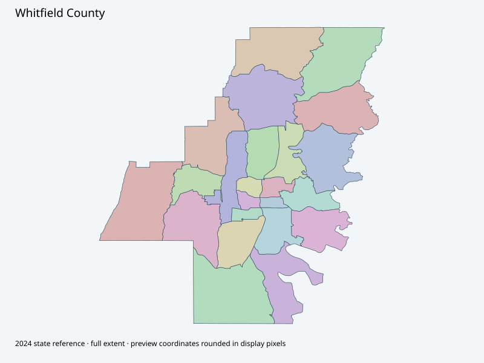

Map index · 23 explicit-FIPS 2024 map rows; 23 historical result identities. No approved crosswalk.

Full native coordinate/attribute extraction (gzip JSON) · Original complete statewide ZIP
Actual county-hosted Precincts and Election Zones services each returned265 attributes with no geometry despite requesting it. Exact IDs/attributes retained as geometry-unavailable. Complete actual PDF printed3/3/2025 is reference;265 split records do not equal physical precincts.
Full objects, county source IDs/clocks and attributes: all 2,701 native contexts. isVirtual:false and source label precinct do not prove physical geometry.
| Source name | Full source GUID | Breakdown ordinal | Source | Map status |
|---|---|---|---|---|
| 1A | 01000000-d884-2e72-34a7-08dcda4c0b6d | 0 | 2024NovGen--whitfield-county-ga | unreviewed / no approved map join |
| 2A | 01000000-d884-2e72-461b-08dcda4c0b81 | 1 | 2024NovGen--whitfield-county-ga | unreviewed / no approved map join |
| 3A | 01000000-d884-2e72-615a-08dcda4c0b93 | 2 | 2024NovGen--whitfield-county-ga | unreviewed / no approved map join |
| 4A | 01000000-d884-2e72-6eff-08dcda4c0ba7 | 3 | 2024NovGen--whitfield-county-ga | unreviewed / no approved map join |
| 5A | 01000000-d884-2e72-0b46-08dcda4c0bbc | 4 | 2024NovGen--whitfield-county-ga | unreviewed / no approved map join |
| 6A | 01000000-d884-2e72-76fb-08dcda4c0bce | 5 | 2024NovGen--whitfield-county-ga | unreviewed / no approved map join |
| AN | 01000000-d884-2e72-e581-08dcda4c0be0 | 6 | 2024NovGen--whitfield-county-ga | unreviewed / no approved map join |
| CA | 01000000-d884-2e72-a8bb-08dcda4c0bf3 | 7 | 2024NovGen--whitfield-county-ga | unreviewed / no approved map join |
| CO | 01000000-d884-2e72-7b5e-08dcda4c0c06 | 8 | 2024NovGen--whitfield-county-ga | unreviewed / no approved map join |
| DG | 01000000-d884-2e72-4f66-08dcda4c0c1a | 9 | 2024NovGen--whitfield-county-ga | unreviewed / no approved map join |
| ES | 01000000-d884-2e72-3c61-08dcda4c0c2e | 10 | 2024NovGen--whitfield-county-ga | unreviewed / no approved map join |
| FI | 01000000-d884-2e72-5639-08dcda4c0c40 | 11 | 2024NovGen--whitfield-county-ga | unreviewed / no approved map join |
| GL | 01000000-d884-2e72-945f-08dcda4c0c52 | 12 | 2024NovGen--whitfield-county-ga | unreviewed / no approved map join |
| LT | 01000000-d884-2e72-acbf-08dcda4c0c66 | 13 | 2024NovGen--whitfield-county-ga | unreviewed / no approved map join |
| MC | 01000000-d884-2e72-2934-08dcda4c0c79 | 14 | 2024NovGen--whitfield-county-ga | unreviewed / no approved map join |
| NI | 01000000-d884-2e72-7848-08dcda4c0c8c | 15 | 2024NovGen--whitfield-county-ga | unreviewed / no approved map join |
| PG | 01000000-d884-2e72-26b6-08dcda4c0c9f | 16 | 2024NovGen--whitfield-county-ga | unreviewed / no approved map join |
| TH | 01000000-d884-2e72-07ab-08dcda4c0cb2 | 17 | 2024NovGen--whitfield-county-ga | unreviewed / no approved map join |
| TI | 01000000-d884-2e72-2a0a-08dcda4c0cc4 | 18 | 2024NovGen--whitfield-county-ga | unreviewed / no approved map join |
| TR | 01000000-d884-2e72-8b3b-08dcda4c0cd6 | 19 | 2024NovGen--whitfield-county-ga | unreviewed / no approved map join |
| UT | 01000000-d884-2e72-2c99-08dcda4c0ceb | 20 | 2024NovGen--whitfield-county-ga | unreviewed / no approved map join |
| VA | 01000000-d884-2e72-4a1c-08dcda4c0d01 | 21 | 2024NovGen--whitfield-county-ga | unreviewed / no approved map join |
| WS | 01000000-d884-2e72-a92d-08dcda4c0d13 | 22 | 2024NovGen--whitfield-county-ga | unreviewed / no approved map join |
| Original row ordinal | DISTRICT | PRECINCT_I | PRECINCT_N |
|---|---|---|---|
| 1287 | 313TR | TR | TR |
| 1289 | 313CA | CA | CA |
| 1290 | 313TI | TI | TI |
| 1291 | 313DG | DG | DG |
| 1292 | 313AN | AN | AN |
| 1293 | 313MC | MC | MC |
| 1294 | 313WS | WS | WS |
| 1295 | 3132A | 2A | 2A |
| 1296 | 313TH | TH | TH |
| 1297 | 3134A | 4A | 4A |
| 1298 | 3133A | 3A | 3A |
| 1299 | 3131A | 1A | 1A |
| 1300 | 3136A | 6A | 6A |
| 1301 | 3135A | 5A | 5A |
| 1302 | 313PG | PG | PG |
| 1308 | 313VA | VA | VA |
| 1309 | 313CO | CO | CO |
| 2209 | 313ES | ES | ES |
| 2210 | 313FI | FI | FI |
| 2211 | 313GL | GL | GL |
| 2212 | 313NI | NI | NI |
| 2218 | 313LT | LT | LT |
| 2219 | 313UT | UT | UT |